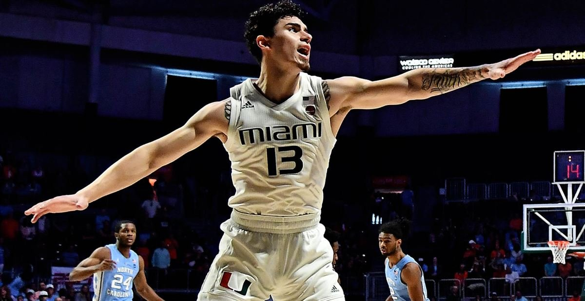

The Shot
About Me
I am a college athelte who is very big on education. My goal is to get my college degree at some point and play professional basetball. If I end up going pro before I get my degree I would like to come back and get my degree.
Education
Throughout high school I had a grade point average (gpa) of 3.6. At the University of Wyoming I had a 3.2 gpa. Now at the University of Miami, I am on the honor roll with a 3.4 gpa. My father graduated from Brown University and he has really pushed me that grades is the most important thing, it's not just basketball.
LEARN "THE SHOT" STEPS
Do you want to learn how to shoot a basketball? Then press "Let's go" to get started
STEP ONE. For this step, all that is needed to do is place one foot slightly in front of the other, depending on what hand you are shooting the basketball with. If you are a right handed shooter, place the right foot slightly in front of your left. If you shoot the ball with your left hand, place left foot slightly in front of the right foot.
STEP 2. This next step for shooting a basketball is pretty simple. Most people get this right when picking up a basketball. For right handed players, your right hand, or shooting hand, will be placed directly at the center of the basketball with your fingers spread evenly. This hand will actually follow through and shoot the basketball. The left hand for right handed players would be the guide hand that is placed on the side of the ball to keep everything balanced. Everything is opposite for left handed shooters.
STEP 3. When you are ready to actually take a shot, the first move with your body that you should make is downward toward the ground by loading the knees, quads, and most leg muscles.
STEP 4. Once your back is straight and you are in the process of jumping up into the air, your arms should rise with the ball in front of your face or slightly to the right if you are a right handed player and prepare to take off using that momentum that was generated with your legs in the previous step.
PERSONAL BIO I was born in Las Vegas, Nevada. I attend the University of Miami as a student-athelte. I am majoring in communications and minoring in business marketing. I was All-Mid-Atlantic Prep League and All-State selection as a senior at Blair Academy in Blairstown, N.J. I was ranked the 51st shooting guard in my recruiting class. I started on varsity at Catholic Central High School in eighth grade and left as program’s leading scorer with 1,557 points before transferring to Blair. I also played AAU basketball for South Jersey Jazz and was coached by former NBA player and ESPN analyst Tim Legler. I played for Joe Mantengna at Blair Academy and before choosing Miami, I also received offers from Villanova, Memphis, Georgia, Missouri and Saint Louis, and more.